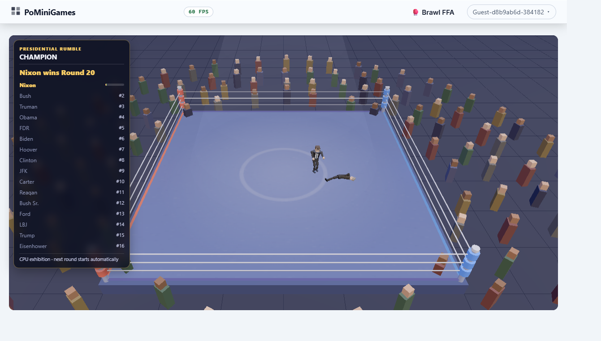
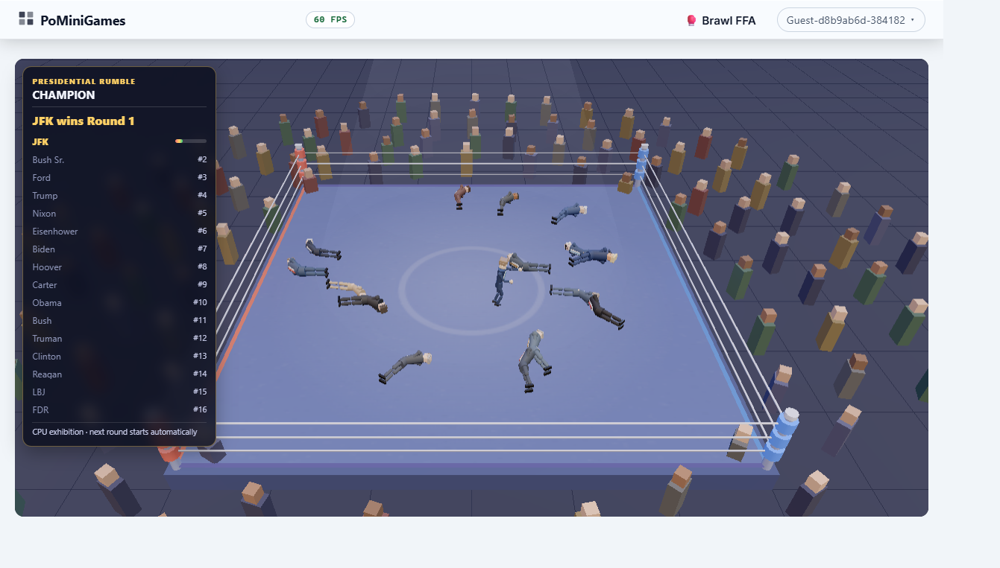

Before

Knocked-out fighters disappeared shortly after falling.
After

All fifteen knockouts remain visible, settled on the mat. Only the next round stands them back up.

Knocked-out fighters disappeared shortly after falling.

All fifteen knockouts remain visible, settled on the mat. Only the next round stands them back up.